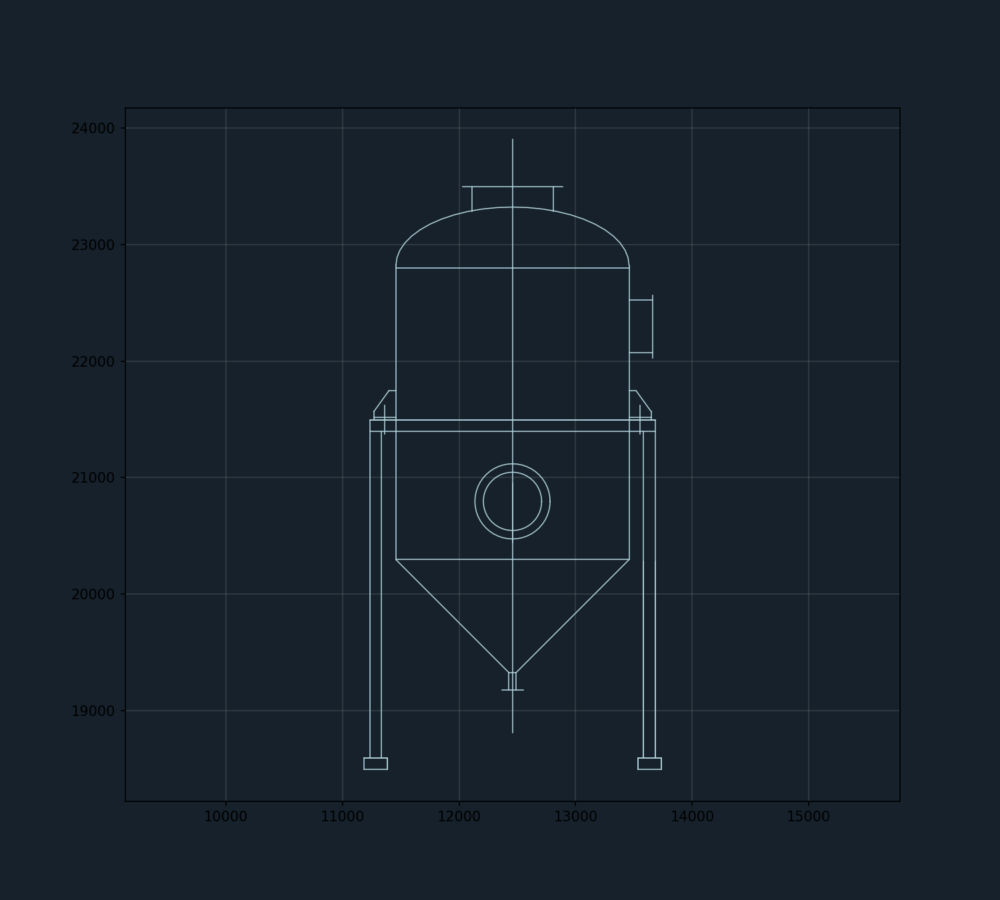
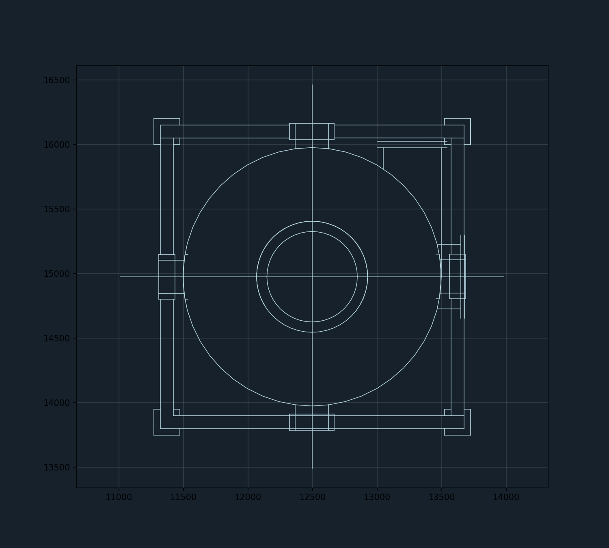

当前模型 · 1.0/2.0外形对比 · 句柄与比例 · 安装待核 · 支承复核
L41B03 旋流除雾器 · 2.0
按用户选择保留台账Ø1800×3100：3100沿用锥尖至顶法兰口径，底排接管另计。本体原示图实量Ø2000、锥尖至顶法兰约4168，差异未解决；没有厂家总图，本轮按台账主尺寸对原图分别作平面0.9和竖向比例表达，不将接口和托耳的图面量测标为制造尺寸。
上封头按椭圆轮廓，修正顶部口、东侧下口、北侧偏东上口和锥底排口。局部XY延续旧模型相对原俯视逆时针90°的轴向，尚未确认厂房绝对工艺方位。接口DN、壁厚、法兰厚及筋板厚等待详图；不加推断地脚孔、法兰螺栓或内部叶片。
原示图模型含4根立柱和4段横梁，旧净模运行时已过滤。本轮直接保存不含旧框架的新本体，原净模22件改为23件，保留四向托耳。本体与专用钢架分开；原31件钢支架及导出逐字节保持。原设备示图框架高3000，专用基础图钢架高2000；本轮只使用专用钢架作局部对照，不能把两套框架重复组合。
新本体以四托耳底为Z0。局部组合设备偏移[0,-175,2000]，托耳对齐钢架顶2000、中心对齐2050开口的中心Y-175。基础图楼面23.000/承托25.000仅用于相对标高；钢架绝对X/Y、设备中心与工艺方位未核，仍保留27台待定位，本类不加入总装。
1.0、原始图纸、已确认的其他设备、建筑和桥架保留。四托耳与支架的接触和本体/接口穿插结果见支承复核；模型接触不代替结构承载和制造详图。
局部复核：实体相交0对；四耳有效接触4处。接触面积及模型限制详见JSON记录。
原侧视（原始示图，不是厂家确认尺寸）

原俯视（原始示图，不是厂家确认尺寸）
